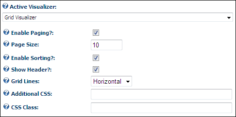

Configuring the Grid Visualizer Settings
The Grid Visualizer displays data in a tabular grid. This setting supports paging and sorting of data and includes display options that control the appearance of grid lines as well as finer grained control over the appearance of the grid, through attaching CSS Classes and CSS Attributes to the entire grid.
Here's how to set the Grid Visualizer settings on the Active Visualizer:
- At Active Visualizer, select Grid Visualizer. The following additional setting are displayed:
- At Enable Paging?, to enable paging on the grid - OR - to disable paging and display all data on one page.
- In the Page Size text box, enter the number of rows to be displayed on each page of data.
- At Enable Sorting?, to enable users to sort data by clicking on a column header to sort by that column- OR - to disable sorting. If Show Header? is not checked, this setting has no effect.
- At Show Header?, to display of column headers on the Grid- OR - to hide headers.
- At Grid Lines, select an option to control the appearance of grid lines on reports. Select from the following options:
- Both: Select to display both horizontal and vertical lines.
- Horizontal: Select to display horizontal lines only.
- None: Select to hide all lines.
- Vertical: Select to display vertical lines only.
- In the Additional CSS text box, enter any additional CSS attributes to be placed in the 'style' attribute of the 'table' element produced by this visualizer.
- In the CSS Class text box, enter a list (separated by single spaces) of CSS classes to apply to the 'table' element produced by this visualizer. For more details see CSS Formatting below.

-
Click the Update button.